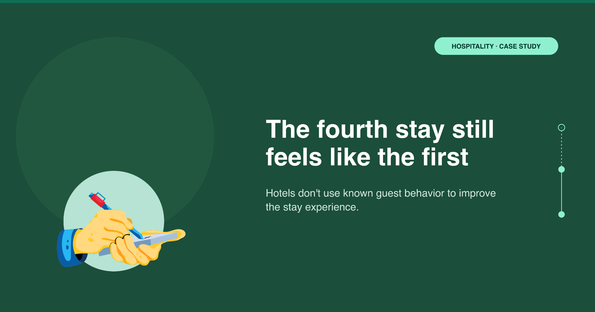
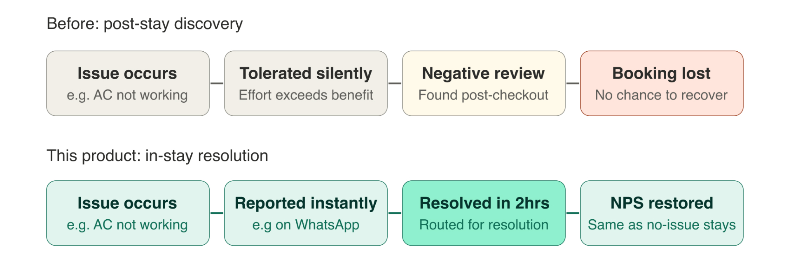
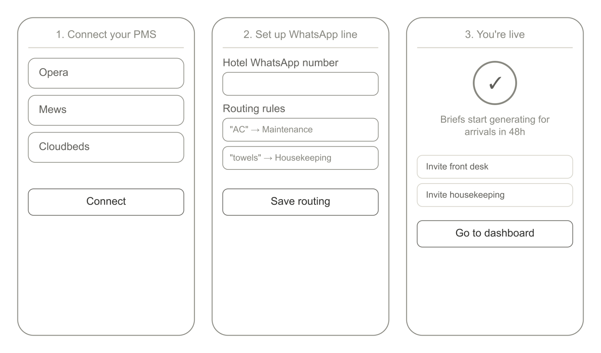
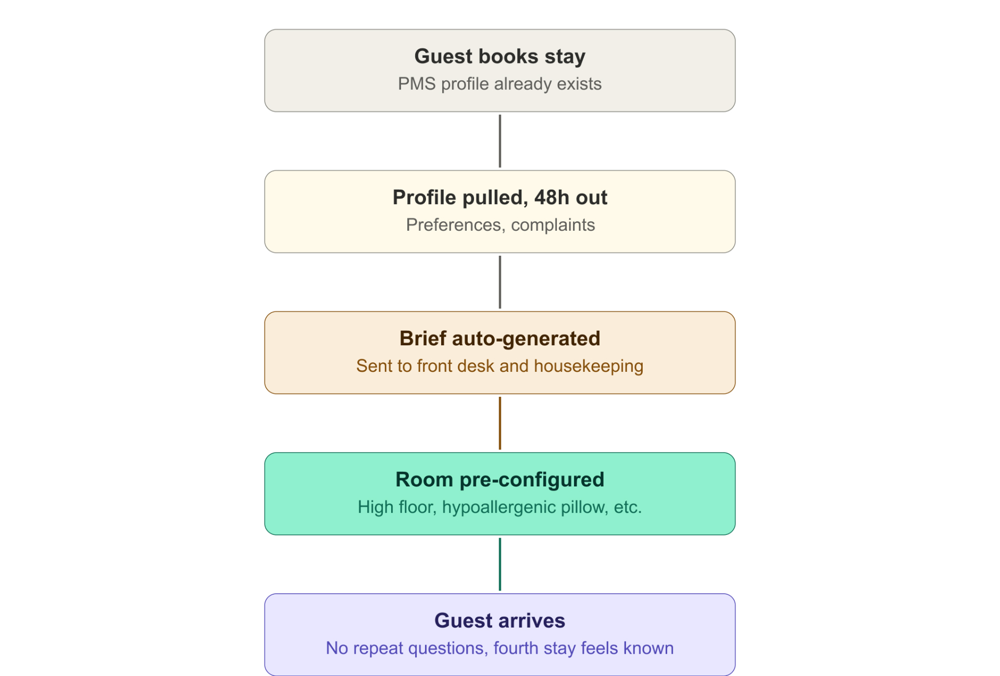
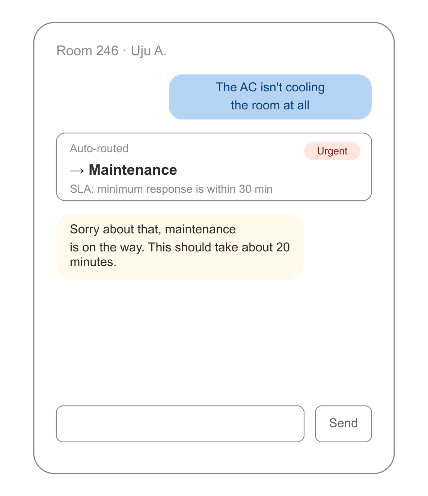
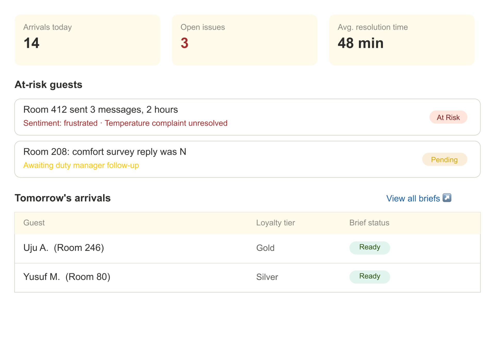

Hotels collect more data than any industry and use almost none of it effectively. This is a teardown proposing a structured operational platform and an AI-enhanced guest intelligence layer.

A returning hotel guest generates a rich behaviour dataset: room preferences, dietary requirements, check-in time patterns, maintenance complaint history, spa usage, and loyalty tier. Most of this data lives in a Property Management System (PMS) that no one outside front-desk operations queries before the guest arrives. The fourth-time returning guest is asked, again, whether they prefer tea or coffee. Hotels have this data yet do not use it to improve the stay experience of their guests. This teardown proposes two solutions: a structured operational approach and an AI-enhanced guest intelligence platform.
The hospitality market exceeds $10 billion, but in Nigeria, nearly all of it has gone into booking infrastructure, payment processing, and the property management system itself. Everything between check-in and check-out still runs mostly on phone calls, paper menus, and front-desk queues.

65% of 3-star reviews mention issues that occurred during the stay but were never reported Source. This suggests that reporting friction is the product problem, but not the underlying issue itself.
Guests who received personalised pre-arrival communication referencing prior-stay preferences rated their stay higher on average; hotels using structured communication protocols see a 23% lift in satisfaction and fewer operational errors. Source.
Guests experience check-in queues, preferences ignored despite being on file, maintenance issues discovered at checkout, and loyalty points that don't feel like recognition.
In hotels and apartments: maintenance issues surface too late to fix in-stay, and satisfaction issues get found in post-stay reviews rather than during the stay.
General Managers have no visibility into at-risk guests until a 1-star review appears, which can sometimes be discovered 4 days after a guest checks out.
She has clear preferences on file at her preferred chain: high floor, away from elevators, hypoallergenic pillow, early check-in. Her preferences are clearly on file, yet she repeats herself at every new property, writes the same feedback in every post-stay survey, and nothing changes.
Pain point: Her preferences are applied inconsistently. She repeats herself at every new property and writes the same feedback in every post-stay survey. Yet nothing changes.
Core need: A stay that begins before she arrives. She prefers her room pre-configured, check-in optional, and all her other preferences recalled and remembered every stay.
His best staff spend most of their time answering the same 20 questions about WiFi, checkout time, nearby restaurants, and shuttle schedules.
Pain point: His team has no capacity for the high-value human interactions that actually differentiate the property. They are exhausted by routine queries.
Core need: Tools that handle routine queries automatically and surface the right information to his team at the right moment.
Front-desk staff either don't document preferences properly, or the data isn't visible/accessible during the guest's stay.
For most guests, tolerating an issue is easier than the hassle of reporting it, so problems stay silent.
Post-stay surveys discover problems after the window to fix them has closed.
A structured operational platform that ensures the right information is passed at the right time to the right staff, reducing friction and lowering in-stay issues. With this, guests feel seen as their likes and preferences are remembered and prioritised.
An AI-enhanced layer is added post-launch once the product gathers real usage data, sending personalised messages to guests pre-arrival and during their stay, simplifying communication, and ensuring easier issue reporting.

If I were taking this product live, this is how I would approach it. For V1, I would build a pre-arrival guest intelligence brief: 24–48 hours before arrival, the system automatically emails the front desk and housekeeping a one-page guest brief with room preferences, dietary flags, prior complaints, loyalty tier, upgrade eligibility, and suggested rooms to assign.

Next, I would prioritise the in-stay primary communication channel, preferably WhatsApp. Messages are routed by keyword matching (rule-based triage): "Extra towels" routes to housekeeping, "AC not working" routes to maintenance with an urgency flag. Issues are tracked to resolution with timestamps visible to the general manager.
Then in-stay comfort surveys: a short single-question check-in sent at 6pm on the second day of every stay longer than 3 nights: "Is everything comfortable with your room? Reply Y or N." A "N" immediately escalates to the duty manager, so feedback is collected while there is still time to act on it. A hotel can have perfect pre-arrival data and still lose the guest on day 2 if there's no low-friction way to report a problem while there's still time to fix it.

I could have led with AI-personalised pre-arrival messaging; users would definitely be impressed with an LLM referencing their specific history and proactively offering helpful recommendations, e.g. reserving a spa appointment for the evening. No guest receives a message that has not been reviewed, and their data is used only for service and never for marketing without explicit consent.
I would also create a personalised loyalty system that learns what every guest values: dining credits, spa access, late checkout, room upgrades, and proactively reward them on the next stay. A guest who never uses the spa doesn't receive spa credits, every guest feels seen and appreciated.
I sequenced the AI features second because an AI-generated message is only as good as the data underneath it. If the data foundation is incomplete or wrong, personalisation actively backfires. A wrong personalisation is worse than a generic one.
My concern: competitors offering flashier AI personalisation from day one may look more impressive in a sales conversation, even if the underlying data is less reliable. I would want to track how much that perception costs the product in early sales cycles.
Competitive platforms like Opera, Mews, Cloudbeds already exist as PMS platforms, and guest-messaging tools like Whistle and Akia offer WhatsApp-style channels. Where this stands out is the day-2 comfort survey, the near-zero-friction reporting mechanism, and the deliberate non-AI-first sequencing that builds a reliable data foundation before layering AI personalisation on top.

Primary: independent boutique hotels of 50–300 rooms with strong review scores and limited tech investment.
Secondary: mid-market hotel chains.
Tertiary: hotel management companies overseeing multiple properties seeking standardised guest experience tooling.
| Risk | Likelihood | Impact | Mitigation |
|---|---|---|---|
| PMS integration complexity because every PMS is different | High | High | Start with 3 PMS partners (Opera, Mews, Cloudbeds) covering 60% of the target market. |
| Staff adoption because some front desk teams can resist new systems | High | Medium | Train floor manager first; P2P adoption; integrate into existing front-desk workflow. |
| Guest privacy concerns about AI monitoring messages | Medium | High | Explicit opt-in at check-in; no sentiment data stored after the stay. |
| Small hotels lack dedicated IT for setup | Medium | Medium | White-glove onboarding within 48 hours; hotel pays nothing until the new system is live and working. |
Most hotels have more guest data than they can use. The competitive advantage isn't more data, it's activating what already exists at the right moment in the guest's stay.
Recovering a dissatisfied guest on day 2 of a 4-day stay costs a manager 10 minutes and restores the whole relationship. Finding out post-stay costs a future booking.
The product fails if hotel staff don't use it consistently. Staff adoption determines whether the guest experience actually improves.
The comfort survey is the fastest ROI, easiest to implement, and most credible demo in a sales conversation. Prove that first, then sell the AI layer.